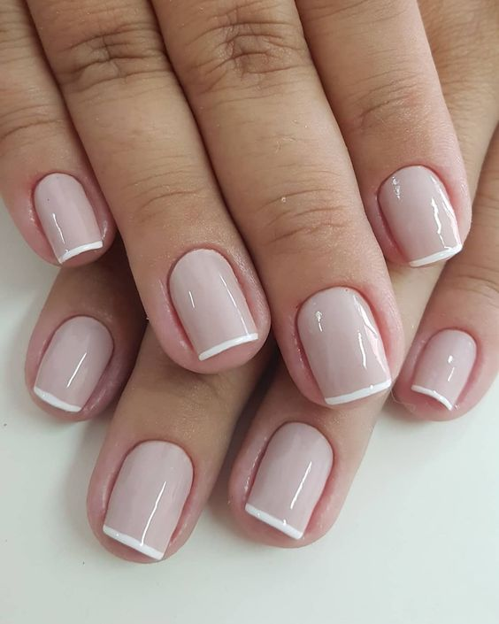
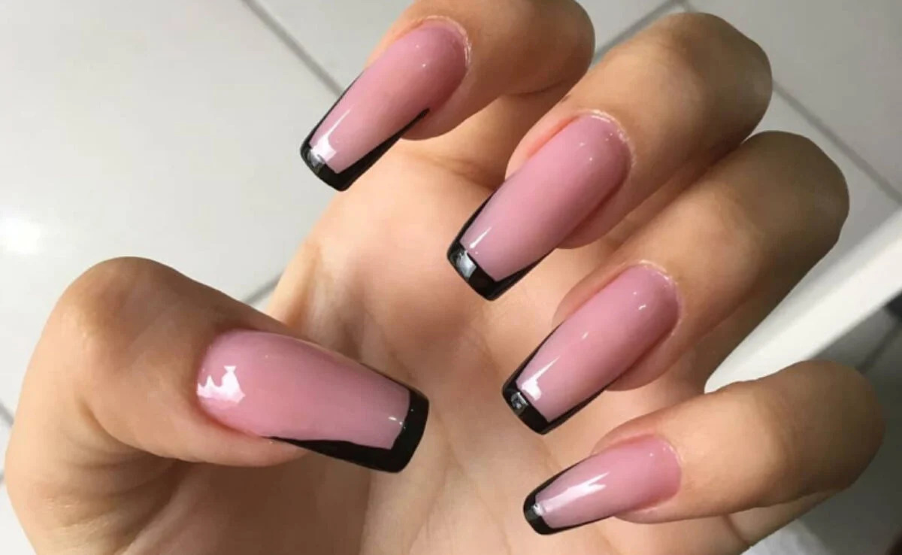
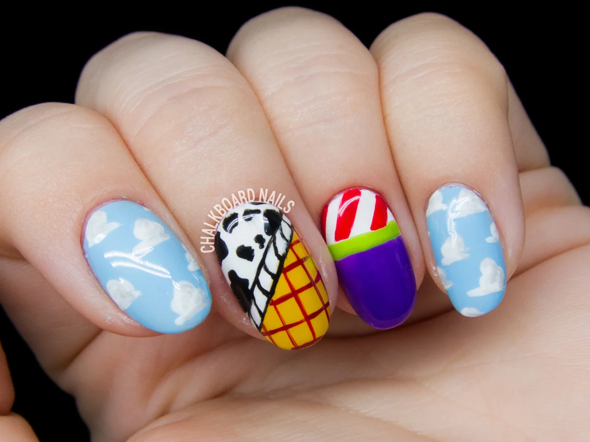

Galeria de Unhas

Alguns Tipos de Unhas
Francesinha
A francesinha é um estilo clássico de manicure que se tornou muito popular ao redor do mundo. Essa técnica consiste em pintar a ponta das unhas com esmalte branco e deixar o restante da unha em uma cor natural ou levemente transparente.
Fibra de Vidro
A fibra de vidro é um tipo de alongamento de unha muito resistente. Ela é ideal para quem faz trabalhos manuais ou para quem digita muito. O seu resultado tende a ser o mais natural possível, pois as suas camadas não costumam ficar muito grossas.
Unhas Desenhadas
Há inúmeras possibilidades de unhas desenhadas para você escolher uma nail art que combine com você. Os desenhos florais são clássicos e os temáticos são criativos e divertidos.
Camila Santos
"Recomendo o salão para fazer as unhas. O ambiente é agradável e acolhedor, e as manicures são muito talentosas. Elas me ajudaram a escolher a cor ideal para o meu tom de pele e o resultado foi incrível!"
Carolina Santos
"Adorei o serviço de unhas no salão! As profissionais foram extremamente atenciosas e cuidadosas. Minhas unhas ficaram perfeitas e duraram muito tempo. Com certeza voltarei!"
Gabriela Oliveira
"Excelente serviço de unhas no salão! Fui muito bem recebida e o atendimento foi impecável. A manicure foi super habilidosa e deixou minhas unhas lindas. Estou muito satisfeita com o resultado e com certeza voltarei para experimentar outros serviços."